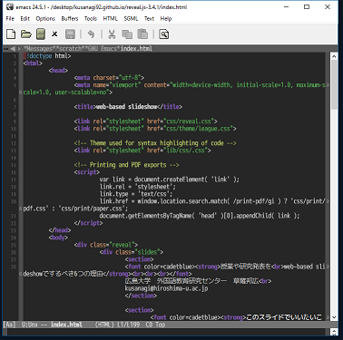

授業や研究発表を
web-based slideshowでするべき6つの理由
このスライドでいいたいこと
web-based slideshowってなあに？
web-based slideshowのいいところ
web-based slideshowってなあに？
web-based slideshowのいいところ①
プラットフォームを問わない
- Microsoft PowerPointなど高価でケッタイなものを使わなくていい
- 昨今，学生や研究者のOSは多様化している
- 大学におけるBYOD環境ではOSだけでなくデバイスも多様化
- レイアウト崩れなど，ファイルの互換性に関する心配も少ない
- ネットに置けばどこからでもアクセスできる
視聴・提示環境のみならず…
- 作成者は自分の好きなエディタなどで作成できる（例えばEmacsやEmacsやEmacsなど）
- 作成者のOSどころか使用する環境も問われない（なんて自由なの）
- Githubなどを使えばバージョン管理や公開も楽
こんな感じでエディタでシンプルに作成できる

web-based slideshowのいいところ②
作成が容易
- 基本はhtmlやcssの知識があれば誰でも書ける
- （流行りの）markdown記法を大概サポートしているので簡単
- Microsoft PowerPointよりも圧倒的な作業時間の短縮
- テンプレートの使い回しが容易
容易なだけでなくて…
- エディタで作成できるためケッタイなGUIによるストレスが軽減
- ソースコード主体であるため他者との共有が容易（Githubなど）
- 作成時間短縮による総合的な業務改善の見込み
web-based slideshowのいいところ③
スライドが構造化されている
- 縦と横の両方向に任意に動ける
- 授業・発表などの構造自体がきれいになる
- 見る側もわかりやすい（e.g., 教材の構造性）
キーボード操作が可能
- ↑ ↓ → ← で移動
- fキーでフルスクリーン表示
- Escキーで全体の構造を表示・選択できる
- bキーでブラックアウト などなど
web-based slideshowのいいところ④
基本はhtmlなのでさまざま拡張が可能
- 音声ファイルの再生
- リンク・ボタン・テキストボックスなどの配置
- さまざまなウェブサービスの埋め込み
- htmlがインタラクティブな程度にはインタラクティブ
- WBTなどの教材作成も可能
音声ファイルの埋め込み
web-based slideshowのいいところ⑤
ブラウザで完結するシームレスなプレゼン
- スライドを戻って示すときにもたもた…
- 音声や動画を見せる度にもたもた…
- webページを見せるためにもたもた…
- コードを見せるためにもたもた…
- データや材料を見せるのにもたもた…
いやぁ，なんていうかもう授業や学会で「もたもた…」はなくていいよ
たとえば「仕様や手続き」も動画でいいかも
web-based slideshowのいいところ⑥
なんといってもかっこいい
- テンプレートが現代風
- 玄人っぽい錯覚を与えられる
- パワポとはデザインが違いますもの
Githubでやっていこう！
Github
- 共同開発におけるバージョン管理ツール
- とてもいい
- このようにプレゼンを公開することもできる
Microsoft PowerPointなどと比べ…